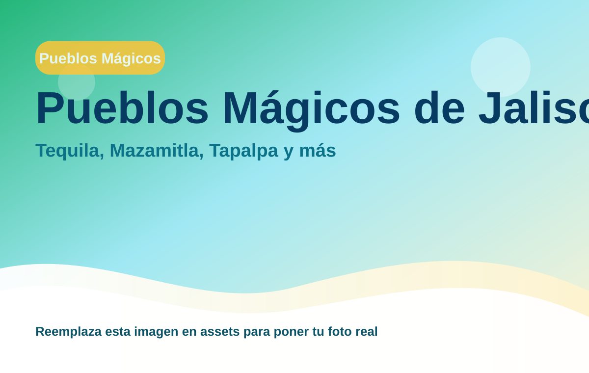
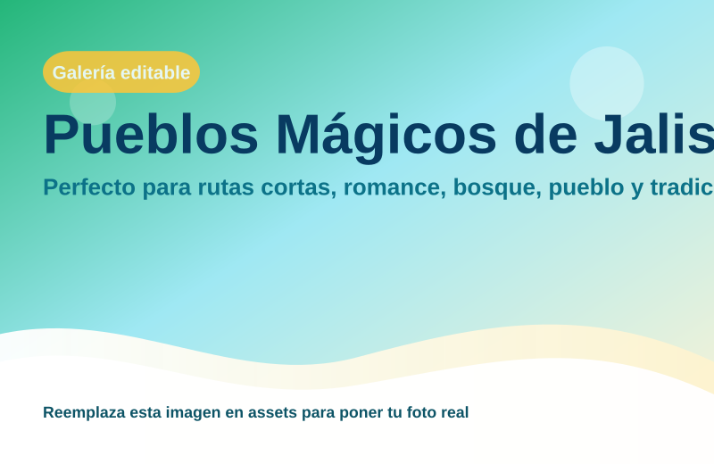

Pueblos Mágicos de Jalisco
Perfecto para rutas cortas, romance, bosque, pueblo y tradición.

Escapadas de fin de semana con muchísimo encanto
Región: Pueblos Mágicos
Ideal para: Tequila, Mazamitla, Tapalpa y más
Usa esta ficha como base rápida. Puedes imprimirla en PDF desde el navegador o compartir el enlace.
